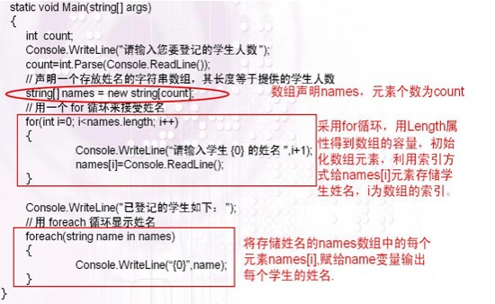

El bucle foreach se utiliza para enumerar todos los elementos de una colección. La expresión en la instrucción foreach consta de dos elementos separados por la palabra clave in. El elemento a la derecha de in es el nombre de la colección, y el elemento a la izquierda de in es el nombre de la variable, que se utiliza para almacenar cada elemento de la colección.
El proceso de ejecución de este bucle es el siguiente: en cada iteración, se toma un nuevo valor de elemento de la colección y se coloca en una variable de solo lectura. Si el valor de retorno de toda la expresión entre paréntesis es true, las instrucciones dentro del bloque foreach pueden ejecutarse. Una vez que todos los elementos de la colección han sido visitados, el valor de toda la expresión es false, y el flujo de control se transfiere a la instrucción de ejecución después del bloque foreach.
La instrucción foreach se usa frecuentemente con matrices (arrays). El siguiente ejemplo leerá los valores de una matriz mediante la instrucción foreach y los mostrará.
Propiedades de la matriz: Array.Length: la capacidad de la matriz
Usando esta propiedad, podemos obtener el valor de capacidad que el objeto de matriz puede almacenar, es decir, la longitud de la matriz o el número de elementos. Esto es bastante fácil de entender. La matriz también tiene otras propiedades, como la dimensionalidad de la matriz, etc. El uso de las propiedades es bastante simple: si aprendes una, los demás formatos son básicamente iguales, así que no daremos ejemplos aquí.
Cuando la matriz tiene muchas dimensiones o una gran capacidad, C# proporciona la instrucción foreach, diseñada específicamente para leer todos los elementos de una colección/matriz. A esta funcionalidad la llamamos recorrido. La sintaxis se escribe de la siguiente manera:
Recorrer una matriz: foreach (type objName in collection/Array)
Esta instrucción revisa uno por uno los valores de las variables almacenadas en la matriz y los extrae uno a uno. Aquí, `type` es el tipo de datos del objeto de matriz que deseas leer y que se almacenará en la variable `objName`. `objName` es un nombre de variable definido de tipo `type`, que representa el elemento obtenido de la colección o matriz (collection/Array) en cada iteración. `collection/Array` es el objeto de matriz que se va a acceder. Con este método, solo necesitas escribir un `foreach` para recorrer matrices de todas las dimensiones, excepto las matrices escalonadas (jagged arrays).
Nota:El tipo de datos `type` de `objName` debe ser el mismo que el tipo del objeto `collection/Array` o mayor (más amplio) que este.
A continuación, mostraremos un ejemplo que usa `foreach` y `for` para recorrer una matriz regular (rectangular), lo que involucra un método para obtener las dimensiones de una matriz, y compararemos la ventaja de `foreach` al recorrer una matriz regular de una sola vez.
Ejemplo
for (int i = 0; i < a.GetLength (0) ;i++ ) // Usar Array.GetLength(n) para obtener el número de elementos de la dimensión en el array [0,1,,,n]; 0 representa las filas, 1 las columnas, y n representa que este array es de dimensión n+1
{
for (int j = 0; j < a.GetLength(1); j++)
{
for (int z = 0; z < a.GetLength(2);z++ )// 2 representa obtener el número de elementos en la profundidad; si el array tiene n dimensiones, hay que escribir n bucles for
{
Console.WriteLine(a[i,j,z]);
}
}
}
Usar un bucle foreach para recorrer el array a de una sola vez
Ejemplo
foreach(int i in a)
{
Console .WriteLine (i);
}
El resultado de ejecutar estos dos códigos es el mismo: ambos muestran un elemento por línea, 8 líneas en total, y los elementos son 1 2 3 4 5 6 7 8 respectivamente.
A continuación, haremos otro ejemplo que usa bucles `for` y `foreach` para almacenar y acceder a elementos de una matriz. Primero, se le pide al usuario que ingrese el número de estudiantes. Luego, ese número de estudiantes se usa como el número de elementos del array `names`, que almacena los nombres de los estudiantes. Se usa un bucle `for` que, comenzando desde el índice i = 0, muestra el mensaje "Ingrese el nombre del estudiante" e itera según el índice de la matriz, almacenando el nombre ingresado por el usuario en el array `names` mediante `names[i]`. El número máximo de iteraciones del bucle `for` (es decir, el índice máximo) se obtiene mediante la propiedad `.Length` del array. Hemos mencionado que la relación entre capacidad e índice es index = Array.Length - 1; en este caso, ese es el valor máximo de i. Es importante tener en cuenta que, con `foreach`, solo se pueden obtener los elementos de la matriz uno por uno; no se puede usar esta instrucción para modificar los elementos almacenados en la matriz. 
Ejemplo
class Program
{
static void Main()
{
int count;
Console.WriteLine("Ingrese el número de estudiantes a registrar");
count = int.Parse(Console.ReadLine());
string[]names = new string[count];
for (int i = 0; i < names.Length; i++)
{
Console.WriteLine("Ingrese el nombre del estudiante {0}", i + 1);
names[i] = Console.ReadLine();
}
Console.WriteLine("Los estudiantes registrados son los siguientes");
foreach (string name in names)
{
Console.WriteLine("{0}", name);
}
Console.ReadKey();
}
}